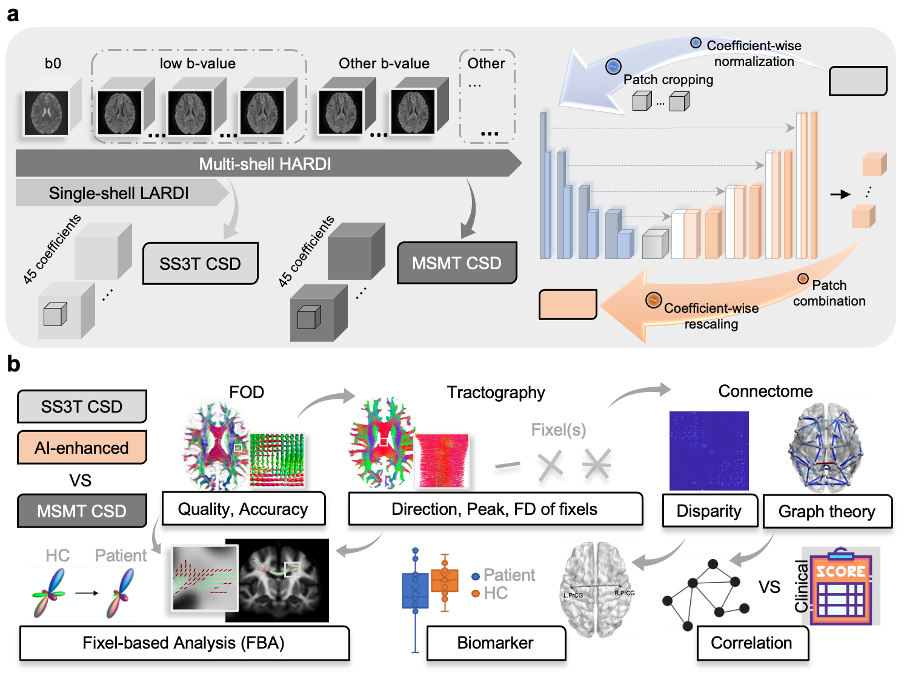

From Promise to Practical Reality: Transforming Diffusion MRI Analysis with Deep Learning Enhancement
FastFOD-Net
- Xinyi Wang
- University of Sydney


Overview
TBD
Data Sets and Instrucatinos
TBD
BibTeX
If you find our data or project useful in your research, please cite:TBD